Home
About
ALTAC Inc
Costa Rica
Summit
Schedule
Tour
Event
Agreegments
Contact
16 de Septiembre
16:30 – 16:40:
Bienvenida - Juan Cano y Arturo Baltodano: Bienvenida e inicio del SUMMIT 2024
16:40 – 16:55:
Conferencia - Errol Solis: Semblanza de la situación actual de Costa Rica
16:55 – 17:10:
Conferencia - Willy Alfaro: La Sostenibilidad como Aliado Empresarial
17:10 – 17:25:
Conferencia - Jorge Bacchi: Uso de IA para potenciar Servicios Financieros
17:25 – 17:40:
Coferencia - Andrés Zamora “Padre Mix”: El Valor Humano en Tiempos de Tecnologpia
17:40 – 17:45:
Cierre de Sesiones - Arturo Baltodano: Mensaje Final
17 de Septiembre
9:00 – 9:10:
Bienvenida - Arturo Baltodano: Mensaje de Bienvenida
9:10 – 9:25:
Taller - Jorge Oceguera: Alistando el Ánimo
9:25 – 10:00:
Conferencia - Willy Alfaro y Mynor Sanchez: Práctica Profesional Responsable de la Sostenibilidad
10:00 – 10:45:
Conferencia - Jose Fco Asturias y José Velazquez: Big Data y Ánalisis Predictivo: Transformando la Auditoria y la Contabilida
11:00 – 12:00:
Conferencia - Fabricio Baltodano y Andres Guerron: Automatización y Control: El Futuro de la Auditoría Financiera
12:00 – 13:00:
Conferencia - Jorge Bacchi: Casos de Éxito: Implementación de IA en la Auditoria y Contabilidad
14:00 – 14:40:
Informe - Brenda Cano: Logros de Marketing y Desarrollo de Marca Personal
14:40 – 15:10:
Taller - Carolina: Compromiso y Cambio: Un Enfoque Novedoso
15:10 – 16:00:
Informe - Arturo Baltodano, Andres Guerron y Geisel: Manuales e Informe de Auditoría y Control de Calidad
18 de Septiembre
9:00 – 9:10:
Bienvenida - Arturo Baltodano: Mensaje de Bienvenida
9:10 – 9:30:
Taller - Jorge Oceguera: Actividad Energizante
9:30 – 10:30:
Taller - Ricardo Dominguez, José Velazquez y Juan Cano: CRM: Ánalisis Funcional
10:45 – 12:00:
Taller - Jimmy Cordero, Willy Alfaro: Herramienta e Informe de cumplimiento en Normas de Sostenibilidad
12:00 – 12:20:
Conferencia - Fabian Baltodano: Impacto de la IA y Sostenibilidad en los Mercados Bursatiles
12:20 – 12:45:
Informe - Patricio Montoya y Juan Ferreira: Comité de Expansión
13:45 – 14:05:
Informe - Ivan Maldona y Jorge Oceguera: Comité de Educación
14:05 – 14:35:
Informe - José Velázquez: Tecnología
14:35 – 15:00:
Taller - Arturo Baltodano y equipo de ALTAC Costa Rica: Plan de Cuentas NIIF
Horario Evento
16 de Septiembre, Registro:
Piso 17 del Hotel Hilton 12:00 h - 15:00 h
16 de Septiembre, Coctel de Bienvenida:
Piso 17, Salon StarLine, Hotel Hilton 16:00 h - 20:00 h
17 de Septiembre, Sesiones de Trabajo:
Piso 17, Salon StarLine 1, Hotel Hilton 9:00 h - 16:00 h
17 de Septiembre, Salida del Hotel:
Entrada Principal, Hotel Hilton 17:30 h
17 de Septiembre, Cena y Cata de Vinos:
Restaurante Novillo Alegre 18:00 h - 21:00 h
18 de Septiembre, Sesiones de Trabajo:
Piso 17, Salon StarLine 1, Hotel Hilton 9:00 h - 15:00 h
18 de Septiembre, Junta de Miembros:
Piso 17, Salon StarLine 1, Hotel Hilton 15:00 h - 16:00 h
18 de Septiembre, Cena de Clausura:
Piso 17, Salon StarLine, Hotel Hilton 18:00 h - 22:00 h